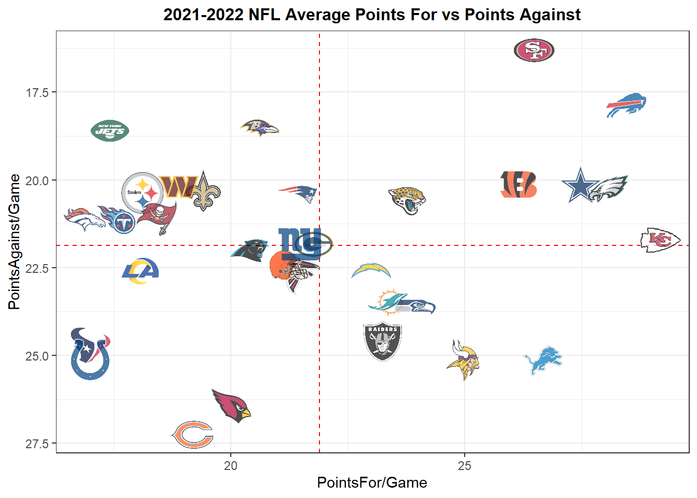
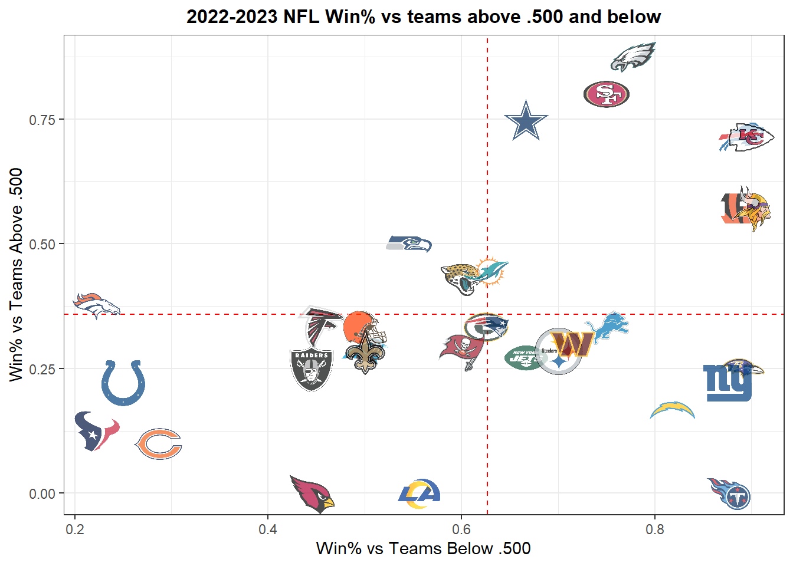
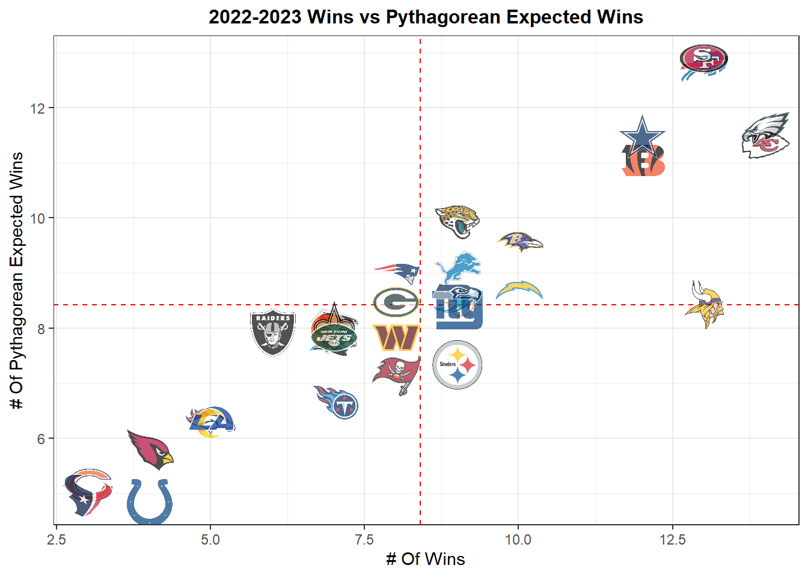
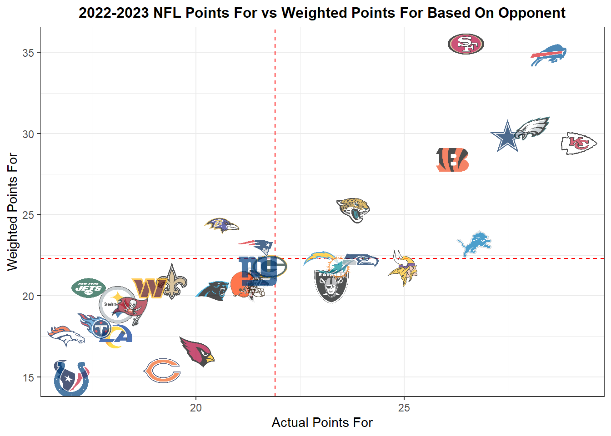
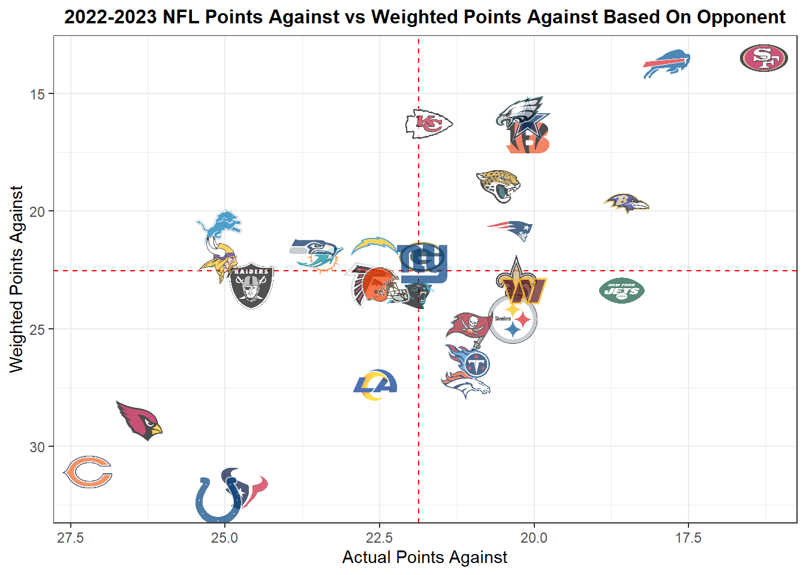

Chapter 2 Team Data
The following are visuals and data that will help you with any Game Props or provide useful information to help you make more informed decisions when it comes to overall team-based results
2.1 General Team Data
ggplot(team_df, aes(x = pointsFor, y = pointsAgainst)) +
geom_mean_lines(aes(h_var = pointsFor, v_var = pointsAgainst)) +
geom_nfl_logos(aes(team_abbr = team), width = 0.07, alpha = 0.7) +
labs(x = "PointsFor/Game",
y = "PointsAgainst/Game",
title = "2021-2022 NFL Average Points For vs Points Against") +
theme_bw() +
theme(plot.title = element_text(size = 12, hjust = 0.5, face = "bold")) +
scale_y_reverse()
below500 <- team_df %>%
filter(winPct < .501)
above500 <- team_df %>%
filter(winPct > .500)
above500_df <- schedule_df %>%
filter(oppositionTeam %in% above500$team) %>%
group_by(team) %>%
mutate(
pointsFor = mean(PointsFor),
pointsAgainst = mean(PointsAgainst),
wins = sum(win),
losses = sum(win == 0),
winPct_above = wins / (wins + losses)
) %>%
summarize(team,
winPct_above) %>%
unique()
below500_df <- schedule_df %>%
filter(oppositionTeam %in% below500$team) %>%
group_by(team) %>%
mutate(
pointsFor = mean(PointsFor),
pointsAgainst = mean(PointsAgainst),
wins = sum(win),
losses = sum(win == 0),
winPct_below = wins / (wins + losses)
) %>%
summarize(team,
winPct_below) %>%
unique()
winPct500 <- merge(above500_df, below500_df, by = "team")
ggplot(winPct500, aes(x = winPct_below, y = winPct_above)) +
geom_mean_lines(aes(h_var = winPct_below, v_var = winPct_above)) +
geom_nfl_logos(aes(team_abbr = team), width = 0.07, alpha = 0.7) +
labs(x = "Win% vs Teams Below .500",
y = "Win% vs Teams Above .500",
title = "2022-2023 NFL Win% vs teams above .500 and below") +
theme_bw() +
theme(plot.title = element_text(size = 12, hjust = 0.5, face = "bold"))
ggplot(team_df, aes(x = wins, y = pythWin)) +
geom_mean_lines(aes(h_var = wins, v_var = pythWin)) +
geom_nfl_logos(aes(team_abbr = team), width = 0.07, alpha = 0.7) +
labs(x = "# Of Wins",
y = "# Of Pythagorean Expected Wins",
title = "2022-2023 Wins vs Pythagorean Expected Wins") +
theme_bw() +
theme(plot.title = element_text(size = 12, hjust = 0.5, face = "bold"))
ggplot(team_df, aes(x = pointsFor, y = netPF)) +
geom_mean_lines(aes(h_var = pointsFor, v_var = netPF)) +
geom_nfl_logos(aes(team_abbr = team), width = 0.07, alpha = 0.7) +
labs(x = "Actual Points For",
y = "Weighted Points For",
title = "2022-2023 NFL Points For vs Weighted Points For Based On Opponent") +
theme_bw() +
theme(plot.title = element_text(size = 12, hjust = 0.5, face = "bold"))
ggplot(team_df, aes(x = pointsAgainst, y = netPA)) +
geom_mean_lines(aes(h_var = pointsAgainst, v_var = netPA)) +
geom_nfl_logos(aes(team_abbr = team), width = 0.07, alpha = 0.7) +
labs(x = "Actual Points Against",
y = "Weighted Points Against",
title = "2022-2023 NFL Points Against vs Weighted Points Against Based On Opponent") +
theme_bw() +
theme(plot.title = element_text(size = 12, hjust = 0.5, face = "bold"))+
scale_y_reverse()+
scale_x_reverse()